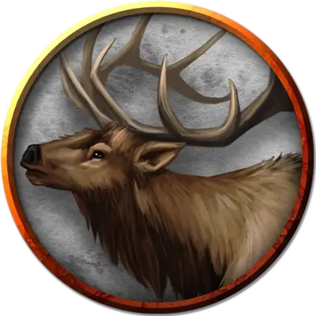

Гигантский лось
Giant Elk
Огромный Зверь, без мировоззрения

Класс Доспеха 14 (природный доспех)
Хиты 42 (5к12 + 10)
Скорость 60 футов
| мод | спас | ||
|---|---|---|---|
| СИЛ | 19 | +4 | +4 |
| ЛОВ | 16 | +3 | +3 |
| ТЕЛ | 14 | +2 | +2 |
| мод | спас | ||
|---|---|---|---|
| ИНТ | 7 | −2 | −2 |
| МДР | 14 | +2 | +2 |
| ХАР | 10 | +0 | +0 |
Навыки Восприятие +4
Чувства пассивное Восприятие 14
Языки Язык Гигантских лосей, понимает Общий, Сильван и Эльфийский, но не говорит на них
Опасность 2 (450 опыта)
Бонус мастерства +2
Среда обитания Горы, Лес, Луг, Холмы
Особенности
Атака в броске. Если лось переместится как минимум на 20 футов по прямой к цели, а затем в том же ходу попадет по ней атакой тараном, цель получает от атаки дополнительные 7 (2к6) урона. Если цель — существо, она должна преуспеть в спасброске Силы Сл 14, иначе будет сбита с ног.
Действия
Таран. Рукопашная атака оружием: +6 к попаданию, досягаемость 10 футов, одна цель. Попадание: 11 (2к6 + 4) дробящего урона.
Копыта. Рукопашная атака оружием: +6 к попаданию, досягаемость 5 футов, одно лежащее ничком существо. Попадание: 22 (4к8 + 4) дробящего урона.
Описание
Величественные гигантские лоси встречаются так редко, что считаются предвестниками важных событий, таких как рождение короля. Легенды гласят, что боги, посещающие Материальный План, принимают облик гигантских лосей. Во многих культурах считается, что охота на этих существ навлекает гнев богов.